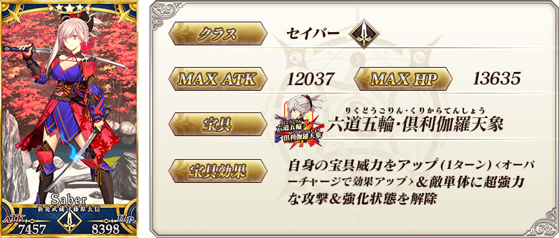
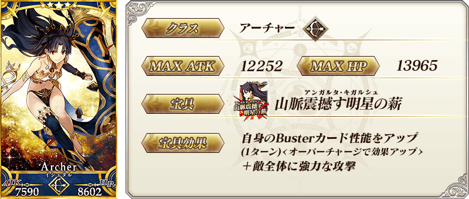
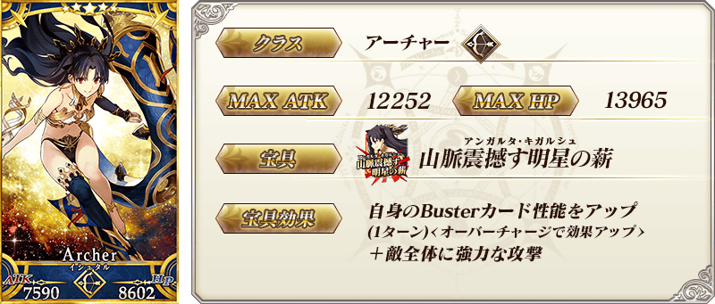
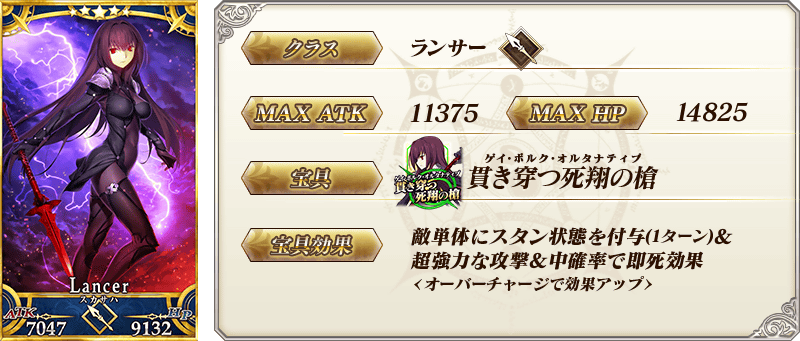
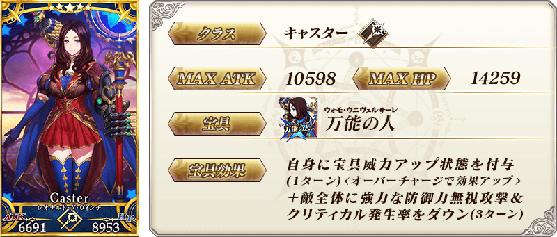
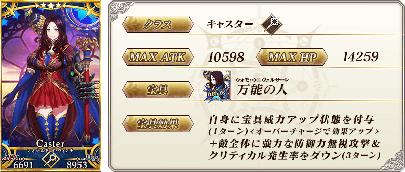
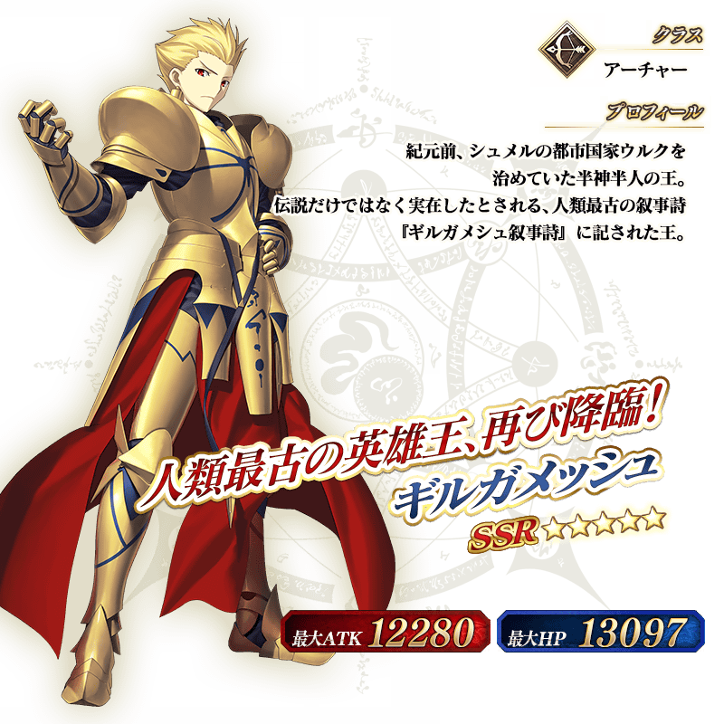
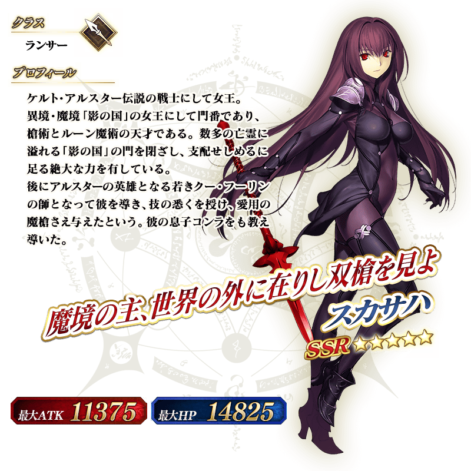
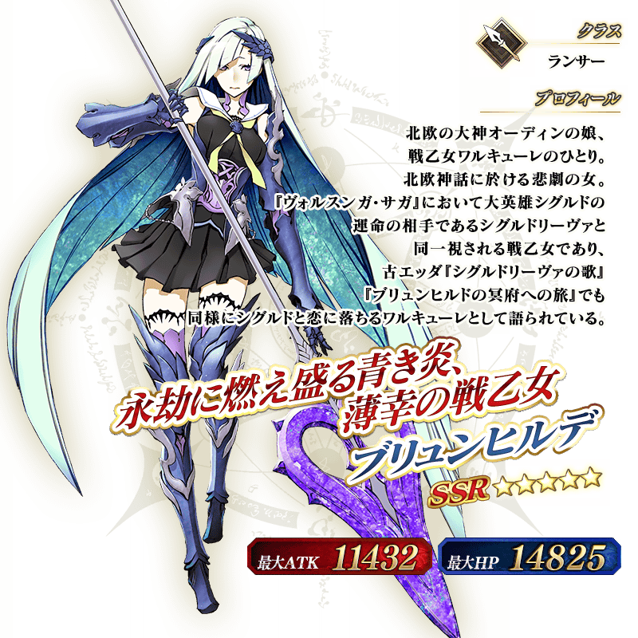

◆「2000萬DL記念Pick Up召喚(每日交替)」期間◆
期間:2020年4月25日(六) 19:00～5月12日(二) 11:59
舉辦期間限定「2000萬DL記念Pick Up召喚(每日交替)」！
為了記念2000萬DL突破，期間限定下述的從者以每日交替Pick Up！
・★5(SSR)宮本武藏(Saber)
・★5(SSR)伊絲塔(Archer)
・★5(SSR)吉爾伽美什(Archer)
・★5(SSR)斯卡哈(Lancer)
・★5(SSR)布倫希爾德
・★5(SSR)李奧納多・達文西(Caster)
・★5(SSR)坂田金時(Berserker)
・★5(SSR)貞德〔Alter〕(Avenger)
並且，在2017年的「New Year 2017Pick Up召喚」登場下述的期間限定概念禮裝也Pick Up！ ・★5(SSR)ファースト・サンライズ ・★4(SR)射初の一矢 ・★3(R)カッコーの巣の上で
Pick Up期間中，Pick Up對象從者與概念禮裝的出現機率提升！
詳情請在聖晶石召喚畫面左下的召喚詳細確認。
11次召喚中確定1張★4(SR)以上和確定1位★3(R)以上的從者！ ※確定★4(SR)以上包含從者和概念禮裝。
◆有關從者的注意◆
※請注意本召喚做為每日交替，下述的從者就算舉辦期間中也會不被抽出日子。
・★5(SSR)宮本武藏(Saber)
・★5(SSR)伊絲塔(Archer)
・★5(SSR)吉爾伽美什(Archer)
・★5(SSR)斯卡哈(Lancer)
・★5(SSR)布倫希爾德
・★5(SSR)李奧納多・達文西(Caster)
・★5(SSR)坂田金時(Berserker)
・★5(SSR)貞德〔Alter〕(Avenger)
※下述的從者在Pick Up期間結束後不會追加到故事召喚。
・★5(SSR)宮本武藏(Saber)
・★5(SSR)伊絲塔(Archer)
・★5(SSR)吉爾伽美什(Archer)
・★5(SSR)斯卡哈(Lancer)
・★5(SSR)布倫希爾德
・★5(SSR)李奧納多・達文西(Caster)
・★5(SSR)坂田金時(Berserker)
・★5(SSR)貞德〔Alter〕(Avenger)
◆有關概念禮裝的注意◆
※下述的概念禮裝，就算Pick Up期間中也能靠友情點數召喚獲得。
・★3(R)カッコーの巣の上で
※請注意在自動變還設定登錄★3(R)概念禮裝的情況，會變成自動變還的對象。
・★3(R)カッコーの巣の上で
◆「2000萬DL記念Pick Up召喚(每日交替)」Pick Up內容◆
| Pick Up期間 | 每日交替Pick Up | |
|---|---|---|
|
4/25(六) 19:00～ 4/26(日) 22:59 |
★5 宮本武藏(Saber) | |
| 4/26(日) 23:00～4/27(一) 22:59 |

|
★5 吉爾伽美什(Archer) |
| 4/27(一) 23:00～4/28(二) 22:59 | ★5 坂田金時(Berserker) | |
| 4/28(二) 23:00～4/29(三) 22:59 | ★5 布倫希爾德 | |
| 4/29(三) 23:00～4/30(四) 22:59 | ★5 斯卡哈(Lancer) | |
| 4/30(四) 23:00～5/1(五) 22:59 | ★5 貞德〔Alter〕 (Avenger) |
|
| 5/1(五) 23:00～5/2(六) 22:59 | ★5 李奧納多・達文西 (Caster) |
|
| 5/2(六) 23:00～5/3(日) 22:59 | ★5 伊絲塔(Archer) | |
| 5/3(日) 23:00～5/4(一) 22:59 | ★5 宮本武藏(Saber) | |
| 5/4(一) 23:00～5/5(二) 22:59 |
|
★5 吉爾伽美什(Archer) |
| 5/5(二) 23:00～5/6(三) 22:59 | ★5 坂田金時(Berserker) | |
| 5/6(三) 23:00～5/7(四) 22:59 | ★5 布倫希爾德 | |
| 5/7(四) 23:00～5/8(五) 22:59 | ★5 斯卡哈(Lancer) | |
| 5/8(五) 23:00～5/9(六) 22:59 | ★5 貞德〔Alter〕 (Avenger) |
|
| 5/9(六) 23:00～5/10(日) 22:59 | ★5 李奧納多・達文西 (Caster) |
|
| 5/10(日) 23:00～5/11(一) 22:59 | ★5 伊絲塔(Archer) | |
| 5/11(一) 23:00～5/12(二) 11:59 | ★5 宮本武藏(Saber) | |
※請注意會以每日交替變更Pick Up的從者。
 ※上述「★5(SSR)宮本武藏(Saber)」的卡面為靈基再臨第2階段。
 
※上述「★5(SSR)伊絲塔(Archer)」的卡面為靈基再臨第2階段。

※上述「★5(SSR)伊絲塔(Archer)」的卡面為靈基再臨第2階段。
 ※上述「★5(SSR)吉爾伽美什(Archer)」的卡面為靈基再臨第2階段。
※上述「★5(SSR)吉爾伽美什(Archer)」的卡面為靈基再臨第2階段。
 ※上述「★5(SSR)斯卡哈(Lancer)」的卡面為靈基再臨第2階段。

 ※上述「★5(SSR)布倫希爾德」的卡面為靈基再臨第2階段。
※上述「★5(SSR)布倫希爾德」的卡面為靈基再臨第2階段。
 
※上述「★5(SSR)李奧納多・達文西(Caster)」的卡面為靈基再臨第2階段。

※上述「★5(SSR)李奧納多・達文西(Caster)」的卡面為靈基再臨第2階段。


 ※上述「★5(SSR)貞德〔Alter〕(Avenger)」的卡面為靈基再臨第2階段。
※上述「★5(SSR)貞德〔Alter〕(Avenger)」的卡面為靈基再臨第2階段。

|
★★★★★SSR |

|
★★★★SR |

|
★★★R |
 ※上述「★5(SSR)宮本武藏(Saber)」的立繪為靈基再臨第2階段。
※上述「★5(SSR)宮本武藏(Saber)」的立繪為靈基再臨第2階段。
 ※上述「★5(SSR)伊絲塔(Archer)」的立繪為靈基再臨第2階段。
※上述「★5(SSR)伊絲塔(Archer)」的立繪為靈基再臨第2階段。
 ※上述「★5(SSR)吉爾伽美什(Archer)」的立繪為靈基再臨第2階段。
 ※上述「★5(SSR)斯卡哈(Lancer)」的立繪為靈基再臨第2階段。
 ※上述「★5(SSR)布倫希爾德」的立繪為靈基再臨第2階段。
 ※上述「★5(SSR)李奧納多・達文西(Caster)」的立繪為靈基再臨第2階段。
※上述「★5(SSR)李奧納多・達文西(Caster)」的立繪為靈基再臨第2階段。

 ※上述「★5(SSR)貞德〔Alter〕(Avenger)」的立繪為靈基再臨第2階段。
※上述「★5(SSR)貞德〔Alter〕(Avenger)」的立繪為靈基再臨第2階段。

介紹在本召喚Pick Up的8位★5(SSR)從者的寶具演出！
在「Fate/Grand Order」官方網站內的公告中，以影片公開寶具演出，敬請確認。
【★5(SSR)宮本武藏(Saber)】
【★5(SSR)伊絲塔(Archer)】
【★5(SSR)吉爾伽美什(Archer)】
【★5(SSR)斯卡哈(Lancer)】
【★5(SSR)布倫希爾德】
【★5(SSR)李奧納多・達文西(Caster)】
【★5(SSR)坂田金時(Berserker)】
【★5(SSR)貞德〔Alter〕(Avenger)】
其他還有，「2000萬DL突破宣傳活動」舉辦預定！
關於詳情，請自下述橫幅確認。
■「2000萬DL突破宣傳活動」詳細情報